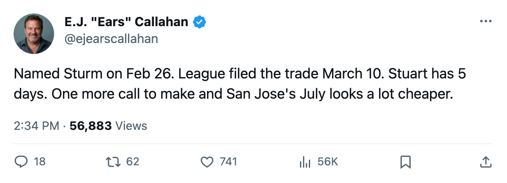
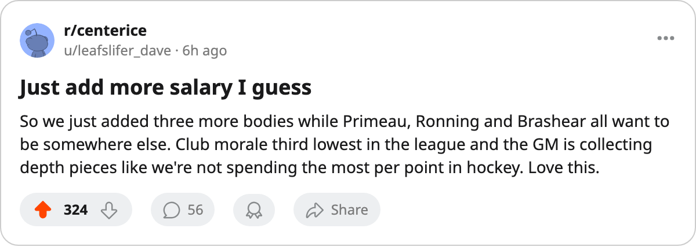

CONFIRMED: San Jose Moves Sturm. The Desk Called It on February 26.
Philadelphia files for a rental while three of its own sit in the league's morale basement.
 E.J. "Ears" CallahanInsider · The Hot Stove
E.J. "Ears" CallahanInsider · The Hot Stove

Does San Jose trade Brad Stuart with 5 days left?

The piece
The league filed a trade between  San Jose Sharks and
San Jose Sharks and  Philadelphia Flyers on March 10. Six players crossed, no picks. Marco Sturm and Stephane Matteau go to Philadelphia. Claude Lapointe, Jeff Hackett and Eric Chouinard cross to San Jose.
Philadelphia Flyers on March 10. Six players crossed, no picks. Marco Sturm and Stephane Matteau go to Philadelphia. Claude Lapointe, Jeff Hackett and Eric Chouinard cross to San Jose.
This desk named Sturm on February 26 as one of two contract-year names San Jose should move while sitting last in the Pacific. The club held the 19th and 26th best expirings in the league. Twelve days later, the call was made.
Philadelphia Flyers carries a payroll-to-point ratio of $1.03M, tied with  New York Rangers for the worst in the league. The Flyers sit deep in the Atlantic behind
New York Rangers for the worst in the league. The Flyers sit deep in the Atlantic behind  New Jersey Devils, who hold 96 points. The profit line reads $4.37M on a $66.73M payroll, 14,622 fans a night at $78. A playoff run is not happening in Philadelphia. The club has not stopped spending.
New Jersey Devils, who hold 96 points. The profit line reads $4.37M on a $66.73M payroll, 14,622 fans a night at $78. A playoff run is not happening in Philadelphia. The club has not stopped spending.
Three Unhappy Men in the Bottom 15
 Donald Brashear77 sits at 72 on the Bureau's Morale Scale. He has played 68 games at 10.4 minutes a night on $2.10M.
Donald Brashear77 sits at 72 on the Bureau's Morale Scale. He has played 68 games at 10.4 minutes a night on $2.10M.  Cliff Ronning79 carries 72 as well, 9.2 minutes a night on $2.77M.
Cliff Ronning79 carries 72 as well, 9.2 minutes a night on $2.77M.  Keith Primeau84 has 74, 41 games, 11.3 minutes a night on $4.60M. Three Flyers among the 15 least happy men in the league.
Keith Primeau84 has 74, 41 games, 11.3 minutes a night on $4.60M. Three Flyers among the 15 least happy men in the league.
Philadelphia's club average morale is 86.8, tied with  Calgary Flames for third lowest of 30 clubs. Only
Calgary Flames for third lowest of 30 clubs. Only  Ottawa Senators and
Ottawa Senators and  Buffalo Sabres are worse.
Buffalo Sabres are worse.
Sturm walks into that room. His deal expires in July, the same window that ended his San Jose tenure.
5 Days and Brad Stuart
The February 26 piece named two names. Sturm is gone. Brad Stuart does not appear in any transaction filed since. He still carries an expiring deal on the San Jose Sharks blue line.
San Jose sits at 61 points on a four-game losing streak. The payroll is $45.39M against $20.01M in profit, a $0.74M per-point return that would look fine if the wins were there. The club holds 5 draft picks and 1 first-rounder, no additional capital filed through other clubs.
The trade deadline is 5 days away. Philadelphia moved. San Jose has one more name to clear before July, when Stuart walks and the club gets nothing back.

